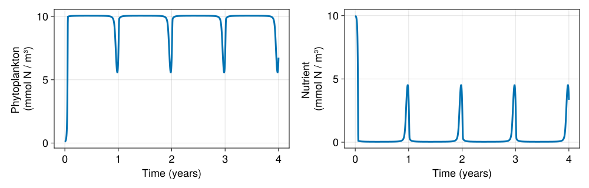

Implementing new models
There are two main ways to extend OceanBioME with new biology:
Add a new plankton component to the NPD framework — implement a
planktontype that slots into the existing Nutrients-Plankton-Detritus framework. The framework automatically handles nutrient uptake, detritus production, inorganic carbon, and oxygen coupling.Implement a completely new BGC model — subtype
AbstractContinuousFormBiogeochemistryfrom Oceananigans for full control over all tracer tendencies. This approach might be prefered for simple biogeochemical models where simplicity of the code is desired. For complex models, building a new biogeochemical model this way is more work but imposes no constraints on model structure. See Implementing a custom biogeochemical model for a full walkthrough.
This page focuses on the first approach, which is appropriate for most new plankton models.
The NPD plankton interface
Here, we describe how to build a new biogeochemical model using the NPD framework. Using this approach is strongly encouraged for most cases since it allows models to be easily extendable. Before considering implementing a new model using the NPD framework, be sure to read the description of the Nutrients-Plankton-Detritus framework to understand the various components.
A plankton component must implement the following four functions, all called with signature (i, j, k, grid, plankton, bgc, fields, auxiliary_fields):
| Function | Returns | Description |
|---|---|---|
nutrient_uptake | mmol N / m³ / s | Total N removed from the inorganic nutrient pool by growth |
dissolved_waste | mmol N / m³ / s | N exported to dissolved organic pools (exudate, dissolved mortality) |
solid_waste | mmol N / m³ / s | N exported to particulate organic pools (mortality, fecal pellets) |
inorganic_waste | mmol N / m³ / s | N returned directly to the inorganic pool (excretion, respiration) |
The nutrient_uptake function may optionally be specialised per tracer by adding a ::Val{:NO₃} (or ::Val{:NH₄} etc.) argument between grid and plankton, which is useful when ammonia and nitrate are tracked separately.
Additionally:
required_biogeochemical_tracersmust return a tuple of the tracer names the component owns (e.g.(:P, :Z)).required_biogeochemical_auxiliary_fieldsmust return a tuple of auxiliary fields needed (typically(:PAR,)).- A tracer tendency method must be defined for each owned tracer via
(bgc::NutrientsPlanktonDetritus)(i, j, k, grid, ::Val{:P}, ...).
Elemental composition is supplied by carbon_ratio, nitrogen_ratio, phosphate_ratio, iron_ratio, silicon_ratio, and calcium_carbonate_rain_ratio. By default, these ratios are applied to all plankton following the Redfield ratio: C:N:P:Fe = 106:16:1:0.0032, with silicon and calcite rain ratios of zero. If different ratios are needed for specific plankton tracers, group_element_tracers can provide the composition of each tracer for conservation calculations.
A plankton component can define one chlorophyll_ratio for all of its chlorophyll-bearing tracers, or define a different ratio for individual tracers.
Plankton components can consume detritus by defining grazing for the detritus tracers they consume.
Example: simple phytoplankton
Here we implement a minimal phytoplankton model with Michaelis-Menten light and nutrient limitation, linear mortality, and exudation of dissolved organic matter, and then run it in a box model and a sinking water column. In this example, zooplankton are not explicitly included.
Imports
We import the four interface generics we are adding methods to (they live in the top NutrientsPlanktonDetritusModels module), the required_biogeochemical_* functions, and biogeochemical_drift_velocity so our phytoplankton can sink:
using OceanBioME, Oceananigans, CairoMakie
using Oceananigans.Units
using Oceananigans.Fields: ConstantField, ZeroField, FunctionField
import Oceananigans.Biogeochemistry: required_biogeochemical_tracers,
required_biogeochemical_auxiliary_fields,
biogeochemical_drift_velocity
using OceanBioME: NutrientsPlanktonDetritus, setup_velocity_fields
# the single-nutrient (nitrogen) enum and the interface generics we add methods to
using OceanBioME.Models.NutrientsPlanktonDetritusModels: N
import OceanBioME.Models.NutrientsPlanktonDetritusModels:
nutrient_uptake, dissolved_waste, solid_waste, inorganic_waste
const year = years = 365daysThe struct
We store the model parameters, and include a sinking_velocity field (used later for the column example). We also tell OceanBioME that this component owns the :P tracer and needs the :PAR auxiliary field:
@kwdef struct SimplePhytoplankton{FT, W}
maximum_growth_rate :: FT = 2.0 / day # 1/s
light_half_saturation :: FT = 30.0 # W/m²
nutrient_half_saturation :: FT = 0.5 # mmol N/m³
mortality_rate :: FT = 0.1 / day # 1/s
exudate_fraction :: FT = 0.05 # fraction of gross growth exuded to the dissolved pool
sinking_velocity :: W = ConstantField(0.0)
end
required_biogeochemical_tracers(::SimplePhytoplankton) = (:P,)
required_biogeochemical_auxiliary_fields(::SimplePhytoplankton) = (:PAR,)Growth rate
We compute gross phytoplankton growth in a helper so it can be reused across the interface methods. Note the fixed argument order all NPD component functions share: (i, j, k, grid, plankton, bgc, fields, auxiliary_fields):
@inline function gross_growth(i, j, k, grid, p::SimplePhytoplankton, fields, auxiliary_fields)
PAR = @inbounds auxiliary_fields.PAR[i, j, k]
N = @inbounds fields.N[i, j, k]
P = @inbounds fields.P[i, j, k]
L_light = PAR / (PAR + p.light_half_saturation)
L_nutrient = N / (N + p.nutrient_half_saturation)
return p.maximum_growth_rate * L_light * L_nutrient * P
endTracer tendency
The :P tendency is a method on the NutrientsPlanktonDetritus model itself:
@inline function (bgc::NutrientsPlanktonDetritus)(i, j, k, grid, ::Val{:P}, clock, fields, auxiliary_fields)
p = bgc.plankton
growth = gross_growth(i, j, k, grid, p, fields, auxiliary_fields)
exudate = p.exudate_fraction * growth
mortality = p.mortality_rate * @inbounds fields.P[i, j, k]
return growth - exudate - mortality
endInterface methods
The nutrient and detritus tracers are assembled by the framework from these four functions: growth removes nitrogen from the nutrient pool (nutrient_uptake), exudation goes to the dissolved organic pool (dissolved_waste), mortality goes to the particulate organic pool (solid_waste), and nothing is released directly back to the inorganic pool (inorganic_waste):
# Nutrient uptake: all gross growth removes N from the nutrient pool
@inline nutrient_uptake(i, j, k, grid, p::SimplePhytoplankton, bgc, fields, aux) =
gross_growth(i, j, k, grid, p, fields, aux)
# Dissolved waste: exudate from growth
@inline dissolved_waste(i, j, k, grid, p::SimplePhytoplankton, bgc, fields, aux) =
p.exudate_fraction * gross_growth(i, j, k, grid, p, fields, aux)
# Solid waste: mortality
@inline solid_waste(i, j, k, grid, p::SimplePhytoplankton, bgc, fields, aux) =
p.mortality_rate * @inbounds fields.P[i, j, k]
# No direct inorganic release
@inline inorganic_waste(i, j, k, grid, ::SimplePhytoplankton, bgc::NutrientsPlanktonDetritus{FT}, args...) where FT =
zero(FT)Because we use a single nitrogen nutrient here, the framework derives the per-tracer uptake for :N automatically. If instead you use NitrateAmmonia nutrients (separate :NO₃/:NH₄), specialise uptake by adding a ::Val{:NO₃} (or ::Val{:NH₄}) argument between grid and the plankton.
The nitrogen budget closes by construction: nutrient_uptake = dP/dt + dissolved_waste + solid_waste + inorganic_waste (with the default nitrogen_ratio = 1, the model is in nitrogen currency so all pools are directly comparable).
Sinking
Finally we let the phytoplankton sink by adding a method to biogeochemical_drift_velocity for the :P tracer, reading the sinking_velocity we stored in the struct:
biogeochemical_drift_velocity(bgc::NutrientsPlanktonDetritus{<:Any, <:Any, <:SimplePhytoplankton}, ::Val{:P}) =
(u = ZeroField(), v = ZeroField(), w = bgc.plankton.sinking_velocity)Running a box model
We can now drop SimplePhytoplankton into NutrientsPlanktonDetritus alongside a single nitrogen nutrient, and run a box model forced by a seasonal surface light with a prescribed PAR. Here we keep the default InstantRemineralisationDetritus detritus, which returns the dissolved and solid waste straight back to the nutrient pool — so the tracer set is just (:N, :P):
@inline PAR⁰(t) = 100 * (1 - cos((t + 15days) * 2π / year)) * (1 / (1 + 0.2 * exp(-((mod(t, year) - 200days) / 50days)^2))) + 2
clock = Clock(; time = 0.0)
# PAR at a nominal 5 m depth
@inline PAR_func(t) = PAR⁰(t) * exp(0.1 * -5)
PAR = FunctionField{Center, Center, Center}(t -> PAR_func(t), BoxModelGrid(); clock)
grid = BoxModelGrid()
biogeochemistry = NutrientsPlanktonDetritus(grid;
nutrients = Nutrients(N, nothing, nothing, nothing),
plankton = SimplePhytoplankton(),
light_attenuation = PrescribedPhotosyntheticallyActiveRadiation(PAR))
model = BoxModel(; biogeochemistry, clock)
set!(model, N = 10, P = 0.1)
simulation = Simulation(model; Δt = 10minutes, stop_time = 4years)
simulation.output_writers[:fields] = JLD2Writer(model, model.fields; filename = "box_simple_phyto.jld2",
schedule = TimeInterval(1day), overwrite_existing = true)
run!(simulation)[ Info: Initializing simulation...
┌ Warning: error ArgumentError("a group or dataset named grid is already present within this group") thrown when trying to serialize the grid at serialized/grid
└ @ Oceananigans.OutputWriters ~/.julia-oceananigans-gpu/packages/Oceananigans/9oDU5/src/OutputWriters/jld2_writer.jl:251
[ Info: ... simulation initialization complete (927.044 ms)
[ Info: Executing initial time step...
[ Info: ... initial time step complete (117.702 ms).
[ Info: Simulation is stopping after running for 7.139 seconds.
[ Info: Simulation time 1460 days equals or exceeds stop time 1460 days.And plot the result:
P_box = FieldTimeSeries("box_simple_phyto.jld2", "P")
N_box = FieldTimeSeries("box_simple_phyto.jld2", "N")
times = P_box.times
fig = Figure(size = (1000, 320), fontsize = 18)
axP = Axis(fig[1, 1], ylabel = "Phytoplankton \n(mmol N / m³)", xlabel = "Time (years)")
lines!(axP, times / year, P_box[1, 1, 1, :], linewidth = 3)
axN = Axis(fig[1, 2], ylabel = "Nutrient \n(mmol N / m³)", xlabel = "Time (years)")
lines!(axN, times / year, N_box[1, 1, 1, :], linewidth = 3)
fig
The phytoplankton blooms as the light increases, drawing the nutrient down to near zero; as the light fades each winter the bloom dies back and the (conserved) nitrogen is remineralised, replenishing the nutrient ready for the next spring bloom.
Running a sinking water column
The same component works in a physical column. Here we also switch the detritus slot to a DissolvedParticulate model, so that instead of recycling in place, the organic matter is exported to depth as it sinks — a more realistic setting for the sinking example. We give the phytoplankton a downward sinking_velocity, drive light with this PR's PrescribedAttenuationPAR, and couple an InstantRemineralisationSediment that catches the sinking phytoplankton at the sea floor and returns it to the nutrient pool (with a small burial fraction). ScaleNegativeTracers keeps the tracers non-negative under advection:
@inline surface_PAR(t) = 100 * (1 - cos((t + 15days) * 2π / year)) * (1 / (1 + 0.2 * exp(-((mod(t, year) - 200days) / 50days)^2))) + 2
grid = RectilinearGrid(topology = (Flat, Flat, Bounded), size = 32, extent = 100)
light_attenuation = PrescribedAttenuationPAR(grid, surface_PAR; attenuation = 0.1)
sediment = InstantRemineralisationSediment(grid; sinking_tracers = :P, remineralisation_reciever = :N)
# `setup_velocity_fields` builds a proper sinking `Field` (rather than a `ConstantField`), which
# `WENO()` advection needs to compute the flux into the sediment at the bottom boundary
sinking_velocity = setup_velocity_fields((; P = 2 / day), grid, true).P
biogeochemistry = NutrientsPlanktonDetritus(grid;
nutrients = Nutrients(N, nothing, nothing, nothing),
plankton = SimplePhytoplankton(; sinking_velocity),
detritus = DissolvedParticulate(grid),
light_attenuation,
sediment,
modifiers = ScaleNegativeTracers((:N, :P, :DOM, :sPOM, :bPOM)))
model = NonhydrostaticModel(grid; biogeochemistry,
advection = WENO(),
closure = ScalarDiffusivity(ν = 1e-4, κ = 1e-4))
set!(model, N = 10, P = 0.1)
simulation = Simulation(model; Δt = 20minutes, stop_time = 1year)
simulation.output_writers[:tracers] = JLD2Writer(model, model.tracers, filename = "column_simple_phyto.jld2",
schedule = TimeInterval(2days), overwrite_existing = true)
simulation.output_writers[:sediment] = JLD2Writer(model, model.biogeochemistry.sediment.fields, indices = (:, :, 1),
filename = "column_simple_phyto_sediment.jld2",
schedule = TimeInterval(2days), overwrite_existing = true)
run!(simulation)[ Info: Initializing simulation...
[ Info: ... simulation initialization complete (1.605 seconds)
[ Info: Executing initial time step...
[ Info: ... initial time step complete (1.698 seconds).
[ Info: Simulation is stopping after running for 18.117 seconds.
[ Info: Simulation time 365 days equals or exceeds stop time 365 days.We plot the phytoplankton and nutrient over depth and time, along with the nitrogen stored in the sediment:
P_col = FieldTimeSeries("column_simple_phyto.jld2", "P")
N_col = FieldTimeSeries("column_simple_phyto.jld2", "N")
sed = FieldTimeSeries("column_simple_phyto_sediment.jld2", "storage")
_, _, zc = nodes(grid, Center(), Center(), Center())
times = P_col.times
fig = Figure(size = (1000, 620), fontsize = 18)
axP = Axis(fig[1, 1], ylabel = "z (m)")
hmP = heatmap!(axP, times ./ year, zc, P_col[1, 1, 1:grid.Nz, 1:end]', colormap = Reverse(:batlow))
Colorbar(fig[1, 2], hmP, label = "P (mmol N / m³)")
axN = Axis(fig[2, 1], ylabel = "z (m)")
hmN = heatmap!(axN, times ./ year, zc, N_col[1, 1, 1:grid.Nz, 1:end]', colormap = Reverse(:batlow))
Colorbar(fig[2, 2], hmN, label = "N (mmol N / m³)")
axS = Axis(fig[3, 1:2], ylabel = "Sediment \n(mmol N / m²)", xlabel = "Time (years)")
lines!(axS, times ./ year, sed[1, 1, 1, :], linewidth = 3)
fig
The surface bloom sinks through the column, drawing the nutrient down near the surface and exporting nitrogen to depth, and the phytoplankton that reaches the bottom accumulates in the sediment.
GPU support
When you run a model on a GPU, Oceananigans copies the model state including the model grids, fields, and biogeochemistry parameters, from CPU memory to GPU memory. When we create a custom plankton struct like SimplePhytoplankton, we need to 'teach' Julia how to transfer each of the fields from CPU to GPU.
The Adapt.jl package provides a mechanism to make this easy. The function adapt(to, x) takes x and returns a GPU-compatible copy on the device to (for example, a CuArray instead of an Array). For a custom struct, you define Adapt.adapt_structure(to, p::SimplePhytoplankton) to rebuild the struct field by field, calling adapt(to, ...) on each one. Scalar parameters (the growth rates, half-saturations, and so on) pass through unchanged, but fields like sinking_velocity must be adapted because they hold grid data that needs to live on the GPU.
For this example, add the following after your struct definition:
using Pkg; Pkg.add("Adapt")
using Adapt
import Adapt: adapt_structure
Adapt.adapt_structure(to, p::SimplePhytoplankton) =
SimplePhytoplankton(adapt(to, p.maximum_growth_rate),
adapt(to, p.light_half_saturation),
adapt(to, p.nutrient_half_saturation),
adapt(to, p.mortality_rate),
adapt(to, p.exudate_fraction),
adapt(to, p.sinking_velocity)) Resolving package versions...
Updating `~/Oceananigans.jl-1636/docs/Project.toml`
[79e6a3ab] + Adapt v4.7.0
Manifest No packages added to or removed from `~/Oceananigans.jl-1636/docs/Manifest.toml`Implementing a completely new BGC model
If your model does not fit the NPD component structure — for example if it requires non-standard tracer coupling or has no plankton at all — you can implement it as a standalone AbstractContinuousFormBiogeochemistry. See Implementing a custom biogeochemical model for a full walkthrough, including a worked Lotka-Volterra predator-prey example, or the Oceananigans biogeochemistry documentation for the full interface. The OceanBioME Biogeochemistry wrapper can be used to add light attenuation, sediments, and particles to a custom model.